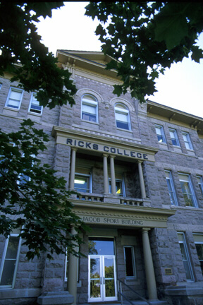
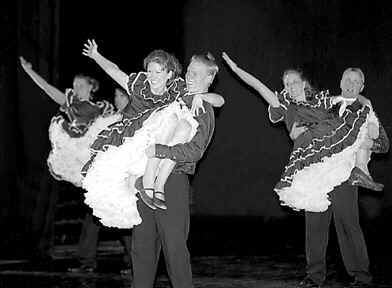
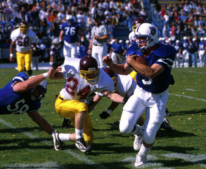

"R Century of Promise"

Join the many others making the special trip to Rexburg to enjoy Homecoming 2000--"R Century of Promise" and the Spori Celebration. Most events will be on October 13th and 14th!
With limited tickets
available we suggest you get
your tickets from the Ticket Office before you
come. Tickets are available weekdays from 9:30
a.m. to 3:00 p.m. (and until 2 p.m. Tuesdays) or
over the Internet at www.ricks.edu/tickets. You
can also call (208) 356-2230 or
1-800-71RICKS.
Come and see what is happening
on campus at this historic period
in Ricks College history!
2 p.m. ASRC Academic Lecture (Free)
7:30 p.m. Miss Ricks/ Homecoming Queen, Hart Auditorium (Free)
7:30 p.m. Hallelujah Homecoming—Concert ($8 and $6 general admission, $1 Ricks students)

Student and alumni entertainment in the Hart Auditorium. Tickets available through the Ricks College Ticket Office.9:30 p.m. (Approx.) Light Parade, Victory Celebration, Fireworks Display (All Free)

Audience members will join students for in a Light Parade through campus from the Hart Building to the Viking Stadium for the Victory Celebration which will feature the pep band, cheerleaders, football team, concluded by a fireworks display.
7 a.m. Emeritus Breakfast, Manwaring Center East Ballroom ($5.25, alumni only)
This breakfast is for alumni and is sponsored by the Ricks College Emeritus Club. The program will center on the Spori Building. Tickets available through the Ricks College Ticket Office.
7 a.m. 5 K Run, starts on campus
10 a.m. Homecoming Parade, beginning at the Kimball Building, proceeding to Main Street and ending near corner of First West and Viking Drive
11 a.m.-2 p.m. Rexburg Harvest Celebration and Spori Commemoration, in front of Spori Building
Activities will include vintage vehicles, period costumes, antique old-time photo booth and FREE potato bar, compliments of Rexburg Chamber of Commerce and local businesses.
12 noon Historic photograph, in front of Spori Building
This photograph will be reminiscent of the widely recognized historical photo taken at the Spori Building’s completion. All present will be invited to be in this photo.

1 p.m. Homecoming Football Game—Viking Stadium ($4 general admission)Ricks vs. Scottsdale Community College from Scotsdale, Arizona
7:30 p.m. Alumni Concert featuring the group Reunion, Kirkham Auditorium ($10 general admission, $5 Ricks students)

The Reunion concert features former members of The Lettermen recording group. Contact the Ricks College Ticket Office for tickets.
8:30-11:30 p.m. Homecoming Dances, Manwaring Center and Hart Auditorium
Contact the Ricks College Ticket Office for tickets.
For other details contact us.